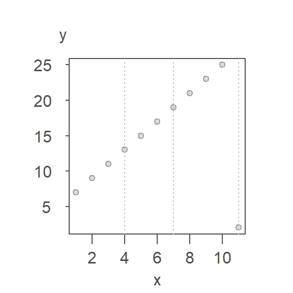
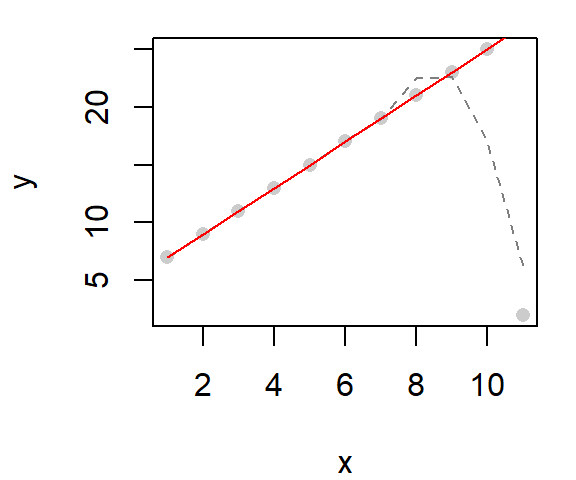
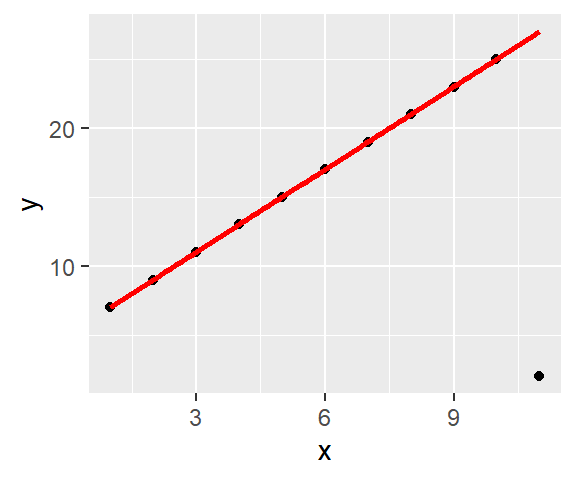

| dplyr | ggplot2 | MASS |
|---|---|---|
| 1.1.4 | 3.4.4 | 7.3.60 |
25 Resistant lines
25.1 Introduction
Ordinary least squares regression lines (those created with the lm() function) suffer from sensitivity to outliers. Because lm’s best fit line makes use of the mean (which is not a robust measure of location), its breakdown point is \(1/n\), meaning that all it takes is for one data point to behave differently from the rest of the points to significantly alter the slope and intercept of the best fit line. For example, let’s start with a well behaved dataset where all points are perfectly aligned, and fit this batch with a regression line:
x <- seq(1:11)
y <- 5 + 2 * x
plot(y ~ x, pch = 20)
M <- lm(y ~ x)
abline( M , col = "red")
As expected, we have a perfect fit. And the regression model’s coefficients match those used to create the data.
coef(M)(Intercept) x
5 2 Now, what if one of the points is re-positioned in the plot, what happens to the regression line?
y[11] <- 2
plot(y ~ x, pch = 20)
M <- lm(y ~ x)
abline( M , col = "red")
Note the significant change in the line’s characteristics, its intercept and slope are now:
coef(M)(Intercept) x
9.5454545 0.8636364 The slope dropped from 2 to 0.86 because of a single point!
If our goal is to explore what the bulk of the data has to say about the phenomena being investigated, we certainly don’t want a few “maverick” values to hijack the analysis. We therefore need a set of fitting tools that minimize the influence of outliers. There are many options out there; most notable are the resistant line (that builds off of Tukey’s 3-point summary line) and the bisquare robust estimation method.
25.2 Robust lines
25.2.1 Tukey’s resistant line
The idea is simple in concept. It involves dividing the dataset into three approximately equal groups of values and summarizing these groups by computing their respective medians. Two half-slopes are then used to join the three points. Note that points that share the same x value are lumped into the same batch which can lead to unequal group sizes. The motivation behind this plot is to use the three-point summary to provide a robust assessment of the type of relationship between both variables. Such plots are often used to help guide re-expression of the variables x or y or both for the sole purpose of straightening the x-y relationship.
Let’s look at an example using the last (modified) dataset. First, we divide the plot into three approximately equal batches.

Next, compute the median x and y values within each section.

Note that we do not include the same point in any two median calculations. This implies that for the mid-third of the data, we do not include the point straddling the left boundary line when computing its median value. Likewise with the right-third of the data.
The x median values are 2.5, 6, 9.5 and the y median values are 10, 17, 22 respectively.
The two end medians are used to compute the slope as:
\[ b = \frac{y_r - y_l}{x_r-x_l} \] where the subscripts \(r\) and \(l\) reference the median values for the right-most and left-most batches.
Once the slope is computed, the intercept can be computed as follows:
\[ median(y_{l,m,r} - b * x_{l,m,r}) \]
where \((x,y)_{l,m,r}\) are the median x and y values for each batch.

This is not bad for a first iteration. But the outlier’s influence is still present given that the line is not passing through all nine points. Recall that the goal is to not allow one lone observation from influencing a fitted line.
From this first iteration, we can extract the residuals. A line is then fitted to the residuals following the same procedure outlined above.

The initial model slope and intercept are 6.43 and 1.71 respectively and the residual’s slope and intercept are -1.22 and 0.24 respectively. The residual slope is then added to the first computed slope and the process is again repeated thus generating the following tweaked slope and updated residuals:

The updated slope is now 5.2. The iteration continues until the slope residuals stabilize. Each successive iteration is shown in the following plot with the final line in dark red. One more iteration should be enough to stabilize the residuals. Giving use the following fitted line whose intercept and slope are 5.03 and 1.99 respectively

Tukey’s resistant line can be computed using the R built-in line() function. You specify the number of iteration via the iter argument. Usually, five iterations will be enough.
r.fit <- line(x,y, iter = 5)You can the resistant to a base plot as follows:
plot(y ~ x, df)
abline(r.fit, col = "red")
You can also add the line to a ggplot:
ggplot(df, aes(x,y)) + geom_point() +
geom_abline(intercept = r.fit$coefficients[1],
slope = r.fit$coefficients[2],
col = "red")
25.2.2 Bisquare
A bisquare fitting strategy makes use of a non-parametric model that assigns weights to observations based on their proximity to the center of the distribution. The closer an observation is to that center, the greater its weight.
The first step is to run a linear regression model on the data then to extract its residuals. Next, a weighting scheme is fit to the residuals such that the points associated with extreme residuals are assigned the smallest weight and the points associated with the smaller residual values are assigned the largest weight. The regression analysis is then re-run using those same weights thus minimizing the influence of the rogue points. This process is repeated several times until the residuals stabilize. The following figure shows three iterations of the bisquare function whereby the weights (shown as grey text next to each point) start off as 1 then are modified following the residuals derived from the most recent regression model.

There are different weighing strategies that can be implemented. One such implementation is presented next.
# Create the bisquare function
wt.bisquare <- function(u, c = 6) {
ifelse( abs(u/c) < 1, (1-(u/c)^2)^2, 0)
}
# Assign an equal weight to all points
wt <- rep(1, length(x))
# Compute the regression, then assign weights based on residual values
for(i in 1:10){
dat.lm <- lm(y ~ x ,weights=wt)
wt <- wt.bisquare( dat.lm$res/ median(abs(dat.lm$res)), c = 6 )
}
# Plot the data and the resulting line
plot(x, y, pch = 20)
abline(dat.lm, col = rgb(1,0,0,0.3))
In the above example, the bisquare method does a great job in eliminating the outlier’s influence.
25.2.2.1 Built-in implementation of the bisquare
The MASS package has a robust linear modeling function called rlm that will implement a variation of the aforementioned bisquare estimation technique. Its results may differ slightly from those presented here, but the difference will be insignificant for the most part.
Note that if you make use of dplyr in a workflow, loading MASS after dplyr will mask dplyr’s select function. This can be problematic. So you either want to load MASS before dplyr, or you can call the function via MASS::rlm. An example of its use follows. The default regression model is added as a dashed line for reference.
dat <- data.frame(x,y)
M <- lm( y ~ x, dat=dat)
Mr <- MASS::rlm( y ~ x, dat=dat, psi="psi.bisquare")
plot(y ~ x,dat, pch=16, col=rgb(0,0,0,0.2))
# Add the robust line
abline( Mr, col="red")
# Add the default regression line
abline( M , col="grey50", lty=2)
The function rlm can also be called directly from within ggplot.
library(ggplot2)
ggplot(dat, aes(x=x, y=y)) + geom_point() +
stat_smooth(method = "lm", se = FALSE, col = "grey50", lty = 2) +
stat_smooth(method = MASS::rlm, se = FALSE, col = "red",
method.args = list(psi = "psi.bisquare"))
25.3 Robust loess
The bisquare estimation method can also be extended to the loess smoothing function by passing the "symmetric" option to the family parameter.
# Fit a regular loess model
lo <- loess(y ~ x, dat)
# Fit a robust loess model
lor <- loess(y ~ x, dat, family = "symmetric")
# Plot the data
plot(y ~ x, dat, pch = 16, col = rgb(0,0,0,0.2))
# Add the default loess
lines(dat$x, predict(lo), col = "grey50", lty = 2)
# Add the robust loess
lines(dat$x, predict(lor), col = "red")
The default loess fit is added as a dashed line for reference.
The robust loess can be implemented in ggplot2’s stat_smooth function as follows:
library(ggplot2)
ggplot(dat, aes(x=x, y=y)) + geom_point() +
stat_smooth(method = "loess", # Regular loess
se=FALSE, col="grey50", lty=2) +
stat_smooth(method = "loess",
method.args = list(family="symmetric"), # Robust loess
se=FALSE, col="red") 
The loess parameters are passed to the loess function via the call to method.args. The red curve is that of the robust loess and the grey dashed curve is that of the standard loess.